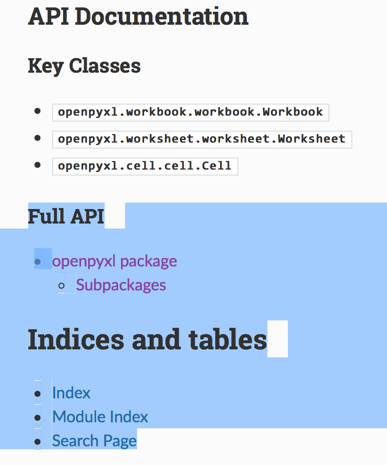

openpyxl
openpyxl- 一句话描述：
read/write Excel 2010 xlsx/xlsm files
- 一句话描述：
- 文档
- 首页
- 入门
- Manipulating a workbook in memory — openpyxl 2.5.3 documentation
- API
- 说明：开发期间如果遇到一些
对象，需要查询其属性、函数等细节，可以去参考这些API文档- 
- API入口
- openpyxl package — openpyxl 3.0.7 documentation
- 核心的类(API)
- 最顶层的：
openpyxl.workbook.workbook.Workbook= 对应excel文件 - 第二层的：
openpyxl.worksheet.worksheet.Worksheet= 对应excel内单个的tab页 - 最底层的：
openpyxl.cell.cell.Cell= 对应单元格
- 最顶层的：
- 相关的：样式styles (
颜色，对齐方式等等)- openpyxl.styles package — openpyxl 3.0.7 documentation
- 说明：开发期间如果遇到一些
安装
pip3 install openpyxl
确认已安装成功
去python的shell中导入，没问题，且能输出版本信息，即说明安装没问题
➜ ~ python3
Python 3.6.1 (default, May 6 2017, 14:32:57)
[GCC 4.2.1 Compatible Apple LLVM 8.1.0 (clang-802.0.38)] on darwin
Type “help”, “copyright”, “credits” or “license” for more information.
>>> import openpyxl
>>> openpyxl.__version__
'2.4.7'
>>>
附带：安装日志
➜ ~ pip3 install openpyxl
Collecting openpyxl
Downloading openpyxl-2.4.7.tar.gz (156kB)
100% |████████████████████████████████| 163kB 64kB/s
Collecting jdcal (from openpyxl)
Downloading jdcal-1.3.tar.gz
Collecting et_xmlfile (from openpyxl)
Downloading et_xmlfile-1.0.1.tar.gz
Building wheels for collected packages: openpyxl, jdcal, et-xmlfile
Running setup.py bdist_wheel for openpyxl … done
Stored in directory: /Users/crifan/Library/Caches/pip/wheels/f5/c0/e2/7bd8f5f74f0c8ee97cd551409f8c8d8c388540248d32a28b99
Running setup.py bdist_wheel for jdcal … done
Stored in directory: /Users/crifan/Library/Caches/pip/wheels/0f/63/92/19ac65ed64189de4d662f269d39dd08a887258842ad2f29549
Running setup.py bdist_wheel for et-xmlfile … done
Stored in directory: /Users/crifan/Library/Caches/pip/wheels/99/f6/53/5e18f3ff4ce36c990fa90ebdf2b80cd9b44dc461f750a1a77c
Successfully built openpyxl jdcal et-xmlfile
Installing collected packages: jdcal, et-xmlfile, openpyxl
Successfully installed et-xmlfile-1.0.1 jdcal-1.3 openpyxl-2.4.7